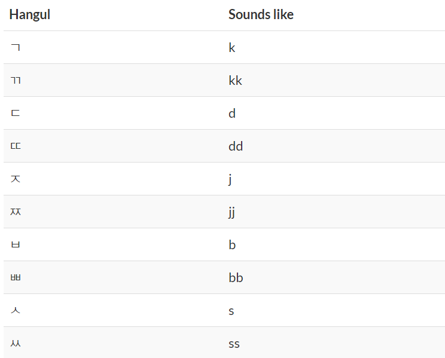

- 기본 모음 Simple Vowels
- 기본 자음 Simple Consonants
- 음절 만들기 Syllable Formation
- 복합 모음 1 Compound Vowels 1
- 복합 모음 2 Compound Vowels 2
- 쌍자음 Double Consonants
- 종합연습 1 Excercise 1
- 받침 1 Final Consonants - Bachim 1
- 받침 2 Final Consonants - Bachim 2
- 종합연습 2 Exercise 2
6. 쌍자음 Double Consonants

Learn from the video!
b. Let's Practice!!!
깨다 [kkae da] : wake up; break apart
또라이 [ddo ra i] : nut job, insane
싸우다 [ssa u da] : fight
짜다 [jja da] : salty
빠르다 [bba rui da] : fast, quick
싸다 [ssada] : cheap